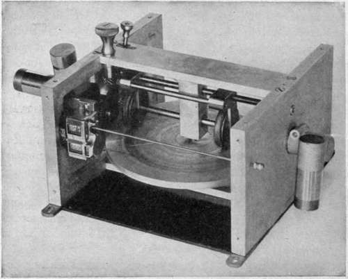

Control Of Camera Speed
Description
This section is from the book "Airplane Photography", by Herbert E. Ives. Also available from Amazon: Airplane photography.
Control Of Camera Speed
In the semi-automatic camera the only control required on the speed of the operating motor is at the upper and lower limits. It must not go so fast as to anticipate the completion of any steps in the cycle of camera operation, such as the fall of plates or pawls into position, which would jam the camera. On the other hand,it must not be so slow that pictures cannot be obtained with the requisite overlap for maps or stereoscopic views. In the American deRam camera the cycle of operations cannot safely be put through in less than four seconds, a short enough interval for most purposes. It is also highly desirable in the semi-automatic camera to have the motive power capable of stopping completely. This saves wear and tear on both motor and camera mechanism.
In the automatic camera an extreme range of speed is called for by the several problems of mapping, oblique photography, and the making of stereoscopic views. For mapping alone, the shortest likely interval may be taken as that required for work at approximately 1000 meters altitude, for a plane speed of 150 kilometers per hour, which demands an interval of six seconds with a ten inch lens on a 4X5 inch plate. For vertical stereos at the same altitude and speed this interval is divided by three, and low oblique stereos need even quicker operation. Hence a range of from 1 to 30 pictures per minute should be provided for. This requirement is difficult to meet with any simple mechanism.
From the standpoint of simplicity in speed regulation the wind turbine of adequate vane surface has much to recommend it. It is only necessary to present more or less of its vane area to the wind in order to secure a considerable range of speed. The method of doing this by a shutter interposed in front is uneconomical, but it is probable that the design can be so altered that more or less of the turbine is exposed beyond the side of the plane, possibly by varying the angle, to secure the same result without introducing useless head resistance. A serious practical objection to the turbine lies in the large vane surface necessary to give adequate power combined with proper speed variation. In the automatic film camera (Type K) this area should be as much as 40 to 50 square inches.
The wind propeller does not lend itself at all well to speed variation. It cannot be partially covered from the air stream, as can the turbine, because of the resulting strain on its mount. A possible form of variable speed propeller, one which, however, has not yet been practically developed, is a propeller with controllable variable pitch. If this could be made mechanically sound it would be well-suited for camera operation. That such a propeller could be worked out is indicated by the good performance of a constant speed propeller developed for radio generators and used on the French deRam camera (Fig. 54). Parenthetically, it may be questioned whether a constant speed propeller is really desirable with an airplane camera. What is required is not exposures at a definite time interval—although most of the data are in that form—but exposures at definite intervals with respect to the motion of the plane, which practically means with reference to its air speed. Rather than build a camera calculated to give exposures at intervals of so many seconds when it is attached to a constant speed propeller, we would do better to use a propeller which responds to the speed of the plane, in conjunction with some form of tachometer to show the rate at which exposures are being made. This in turn should be coordinated with the indications of a proper camera-field indicating sight.
One solution of the problem of speed control with a propeller of practically fixed speed, is to use a governor and slip clutch as in the English Type F film camera (Fig. 57). Here the propeller shaft and the camera driving axle are connected by two friction discs. That on the camera mechanism is forced against the other by a spiral spring, whose tension is controlled by a ball governor. If the camera speed becomes too high the governor reduces the tension on the spiral spring and the discs slip over each other. The point where this slipping occurs is determined by the position of the governor as a whole, and this is controlled by a lever on top of the camera the center to the periphery of the larger disc. The speed range attainable in this way is limited only by the size of the large disc. An application of this idea is shown in the speed control (Fig. 68), designed for the American Type K camera when operated on an electric motor or on a simple propeller. The same idea is utilized in the Duchatellier film camera, in connection with the constant speed propeller already described.
Fig. 68. - Friction disc speed control.
Another speed control device, perhaps more positive but certainly more complicated and wasteful of power, consists of a large flat disc, driven by the propeller or electric motor, and from which the camera is driven by a shaft from a smaller friction disc which may be pressed against any point from On the whole it is eminently desirable from the standpoint of power operation that the automatic camera should embody its own means for altering the interval between exposures, so that all the external attachment needed is a single connection to a source of power either of constant speed, as an electric motor, or of speed proportional to that of the plane, as with a simple wind propeller. This makes the camera largely independent of the nature of the power supply, whereas a camera designed for a special variable speed device is of little use on a plane where this is not available.
Continue to:
Tags
camera, lens, airplane, aerial, film, exposure, photography, maps, birdseye